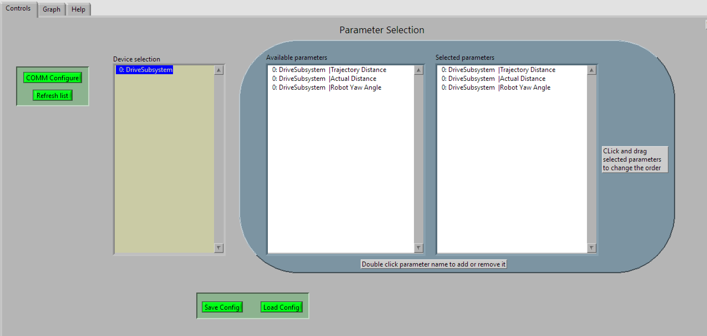

Third Coast Telemetry
Stryke Force
Telemetry Checklist
- Add Third Coast library (
thirdcoast.json) to robot project’svendordepslibrary. - Set up Telemetry Service in the
RobotContainerclass. - Register measurable devices to be graphed.
- Register measurable subsystems to be graphed.
- Fire up the Grapher and start measuring.
Add Third Coast Library
If you haven’t already, add the most recent version of Third Coast Java library to the robot project.
Set up Telemetry Service
The RobotContainer class constructor is the usual place for this.
Register Measurable Devices
Much of the hardware we commonly use have pre-configured measurements ready to go. For example, we can choose to register a subsystem’s Talon for graphing.
public ClawSubsystem(TelemetryService telemetryService) {
servo = new Servo(1);
telemetryService.register(new ServoMeasurable(clawServo));
}The Third Coast library’s org.strykeforce.telemetry.measurable package has pre-configured Measurable implementations set up for: Canifiers, digital inputs, digital outputs, Pigeon IMUs, power distribution panel, servos, TalonFX, TalonSRX, and ultrasonic rangefinders. Since Talons are so commonly used, we have a convenience method that takes a Talon object directly.
Register Measurable Subsystems
It’s common to want to graph the internal state of a subsystem and is easy to do using our MeasurableSubsystem as the base class for your subsystem. Just override and implement the getMeasures() method with your desired measurements.
public class DriveSubsystem extends MeasurableSubsystem {
// rest of subsystem...
@Override
public Set<Measure> getMeasures() {
return Set.of(
new Measure("Trajectory Distance", this::getTrajectoryDistance),
new Measure("Actual Distance", this::getActualDistance),
new Measure("Robot Yaw Angle", () -> getRobotYawAngle().getDegrees())
);
}
}This results in the grapher configuration show below.
